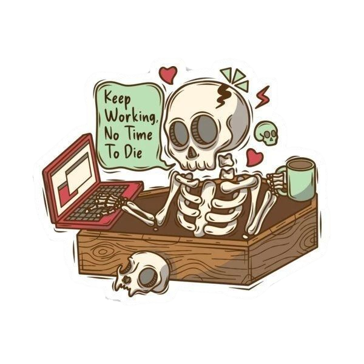

Experiencia Profesional
Actualmente cursando 1º de Desarrollo de Aplicaciones Web.
Aunque no cuento con experiencia laboral previa, estoy adquiriendo conocimientos sólidos en programación, bases de datos, y diseño web.
Cuento con muchas ganas de aprender y desarrollar proyectos prácticos.
Experiencia Laboral
Actualmente no cuento con experiencia laboral formal,
pero estoy preparándome para integrarme en un entorno profesional.
Me esfuerzo por aplicar los conocimientos adquiridos en el ciclo de DAW
y tengo muchas ganas de seguir aprendiendo y aportar en futuros proyectos
o prácticas.
